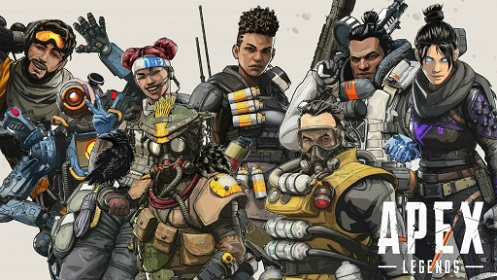
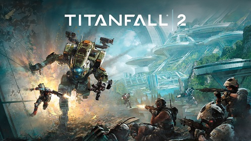

日本で今一番熱いオンラインゲームといっても過言ではないゲーム。
60人で試合で3人でチームを組み、自分達以外の19チームを倒したら勝ち、という単純なルールですが、使用するキャラクターごとにかなり繊細なテクニックと膨大な知識が必要になるのでかなり奥が深いゲームです。ちなみに私が初めてやったFPSはこのゲームです。始めたばかりの頃は足手まといにしかなりませんでしたが、やっていくうちに役に立てるようになりました。

隠れた名作「タイタンフォール２」、↑のApexの数百年前のストーリーです。
プレイヤーは銃を使って相手と戦いますが、その戦闘の中でタイタンと呼ばれる大きなロボットに乗ることも出来ます。普通のFPSのような戦闘もできながら、ロボットVSロボットの熱い戦いが繰り広げられるゲームです。
今はオンラインの人数が減ってきているので少しマッチングに時間がかかりますが、間違いなく爽快感も大きく楽しいゲームです。